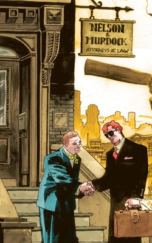
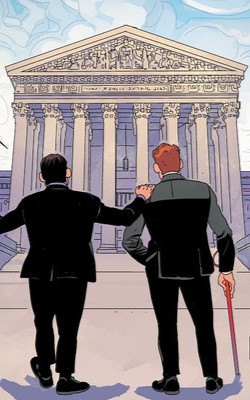

¿Quiénes Somos?
Nelson & Murdock es un despacho de abogados fundado en 1964 ubicado en la ciudad de Nueva York. Nos especializamos en casos relacionados al derecho civil, penal y laboral, asi como en casos relacionados al mundo de los superheroes.


Misión y visión
Nuestra mision defender los intereses de nuestros clientes para alcanzar la justicia que merecen. Como vision, buscamos ser un despacho encargado de proteger a los desprotegidos y ayudar a todos aquellos que lo necesiten.